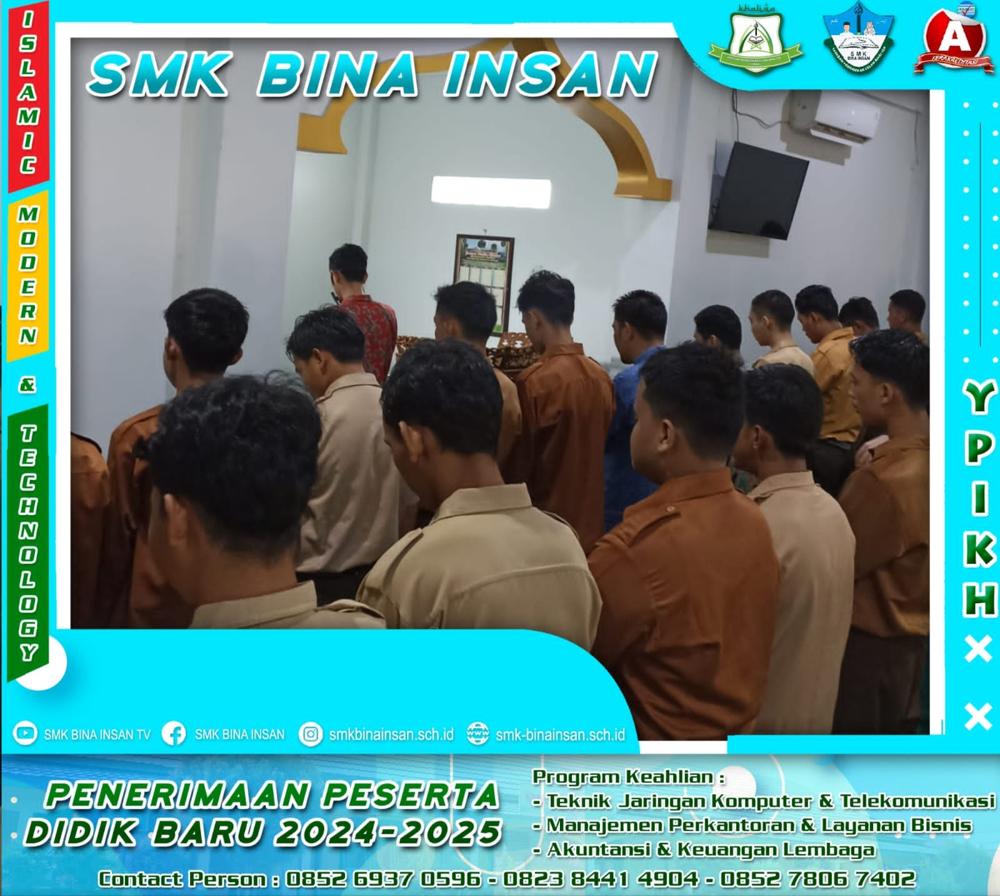

Menjadikan siswa yang unggul dan terampil dalam bidang keahliannya,berkarakter wirausaha,siap bekerja dan mampu bersaing di era Global.
"Jurusan Teknik Jaringan Komputer dan Telekomunikasi (TKJ) adalah ilmu berbasis Teknologi Informasi dan Komunikasi yang melibatkan algoritma, pemrograman komputer, perakitan komputer, perakitan jaringan komputer, dan pengoperasian perangkat lunak serta internet. Mahasiswa jurusan TKJ mempelajari tentang desain, implementasi, dan pengelolaan jaringan serta sistem telekomunikasi".Pembelajaran mengacu pada kurikulum operasional satuan pendidikan (KOSP) yang sudah terintegrasi dengan industri.Konsentrasi keahlian menyiapkan lulusan yang terampil dan berpeluang bekerja dibidang :
"Jurusan Manajemen Perkantoran dan Layanan Bisnis (MPLB) adalah program keahlian yang mempersiapkan siswa untuk bekerja di bidang administrasi perkantoran dan layanan bisnis. Lulusan MPLB memiliki keterampilan sebagai Sekretaris Junior, Staf Administrasi Kantor, Admin Online, Digital Marketer, dan juga dapat berwirausaha dalam komputer perkantoran, pemasaran digital, dan event organizer".Pembelajaran mengacu pada kurikulum operasional satuan pendidikan (KOSP) yang sudah terintegrasi dengan industri.Konsentrasi keahlian menyiapkan lulusan yang terampil dan berpeluang bekerja dibidang :
"Jurusan Akuntansi dan Keuangan Lembaga (AKL) adalah program keahlian yang mempersiapkan siswa untuk mengelola transaksi keuangan lembaga secara manual maupun komputerisasi. Lulusan AKL memiliki keterampilan sebagai staff accounting yang handal dan dapat bekerja dalam bidang akuntansi dan manajemen".Pembelajaran mengacu pada kurikulum operasional satuan pendidikan (KOSP) yang sudah terintegrasi dengan industri.Konsentrasi keahlian menyiapkan lulusan yang terampil dan berpeluang bekerja dibidang :